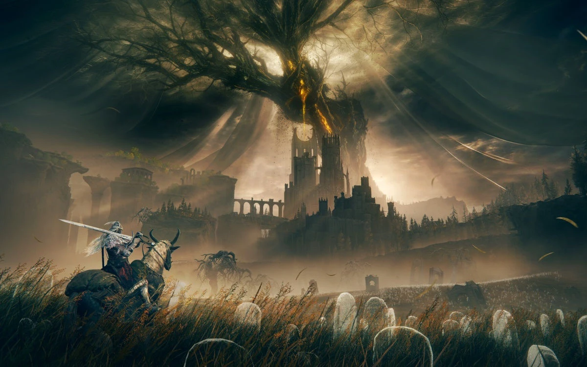

Elden Ring: Shadow of the Erdtree deve ter entre 30 a 40 horas de conteúdo inédito
No X, usuário fez um compilado sobre as informações já divulgadas sobre a expansão
Postado 07 de Junho de 2024 Com algumas prévias de Elden Ring: Shadow of the Erdtree sendo divulgadas desde terça-feira (4), já é possível saber alguns detalhes importantes sobre a aguardada expansão. Entre elas, estão o número de chefes, novas armas e até mesmo a duração do jogo - que, claro, pode variar de acordo com o nível e a habilidade do jogador. A DLC chega em 21 de junho para PC, PlayStation 4, PlayStation 5, Xbox One e Xbox Series X|S.
No X, o usuário @Okami13_ fez um compilado sobre as principais novidades já divulgadas sobre
Elden Ring: Shadow of the Erdtree. Segundo ele, a DLC traz mais de 10 novos chefes principais e
adicionais, cerca de 100 novas armas, além de oito novos tipos de armamento.
A expansão também deve valer o preço de R$ 154,90, já que são esperadas entre 30 e 40 horas de
conteúdo inédito no DLC.
Detalhes sobre o mapa também foram informados. De acordo com as novidadesreunidas pelo usuário, o
mapa tem um tamanho próximo ao de Limgrave, Península das Lágrimas e uma parte de Caelid. Porém ele
é mais denso e compacto que o mapa do jogo base.
Os inimigos também vem com novidades e devem ser mais rápidos e ágeis.
Por fim, é dito também que o DLC contará com um sistema chamado Shadow Realm Blessing, que permitirá
usar alguns fragmentos acumuláveis para reduzir o dano recebido e aumentar o dano causado, o que
deve ajudar, principalmente, jogadores menos experientes.
GTA 6 será lançado em 2025, confirma Rockstar
Postado 09 de Junho de 2024
O aguardado trailer do novo GTA foi revelado em dezembro do ano passado, trazendo um breve olhar
para a sequência e muitas novidades instigantes que atiçaram o hype dos fãs. Para a alegria de
muitos, a Rockstar confirmou, nesta quinta-feira (16), que GTA 6 será lançado na
primavera(brasileira) de 2025 — janela referente a setembro e dezembro do ano que vem.
A notícia, confirmada pela Take-Two em uma teleconferência de resultados do ano fiscal de 2024, é a
luz que os fãs precisavam após inúmeros rumores afirmando que a sequência chegaria só em 2026 devido
a um suposto atraso no desenvolvimento.
"Nossa perspectiva reflete um estreitamento da janela previamente estabelecida pela Rockstar Games
do calendário de 2025 para o outono [primavera brasileira] de 2025 para Grand Theft Auto VI", disse
a publisher. "Estamos altamente confiantes de que a Rockstar proporcionará uma experiência de
entretenimento incomparável e nossas expectativas quanto ao impacto comercial do título continuam
aumentando".
GTA 6 é o jogo mais importante da história, segundo analista
A sequência é, facilmente, um dos games mais aguardados de todos os tempos — e tem gente por aí
colocando muita fé no projeto. Em entrevista recente ao GamesIndustry.biz, Mat Piscatella, famoso
analista, afirmou que GTA 6 é o jogo "mais importante da indústria".
"Teremos um lote renovado de interesse com GTA 6 em particular. Provavelmente nunca houve algo mais
importante para ser lançado na indústria, então sem pressão", afirmou o analista ao veículo
britânico.
Postagens Recentes
Elden Ring: Shadow of the Erdtree deve ter entre 30 a 40 horas de conteúdo inédito
No X, usuário fez um compilado sobre as informações já divulgadas sobre a expansão
Leia maisGTA 6 será lançado em 2025, confirma Rockstar
O aguardado trailer do novo GTA foi revelado em dezembro do ano passado, trazendo um breve olhar para a sequência e muitas novidades instigantes que atiçaram o hype dos fãs.
Leia mais